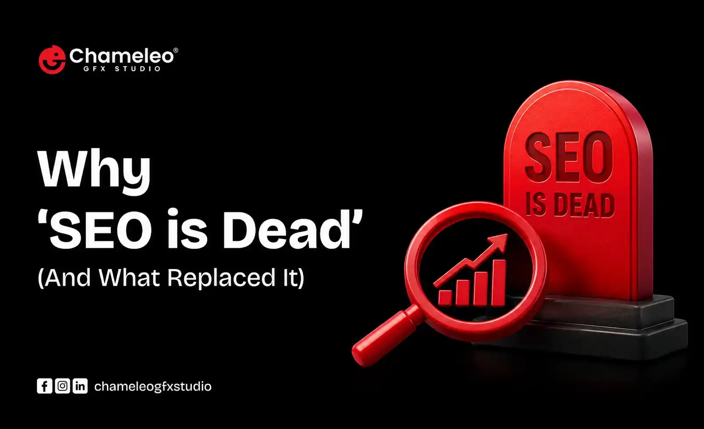

Why 'SEO is Dead' (And What Replaced It)

Introduction: The Death of Traditional SEO
Every few years, marketing forums and industry pundits proclaim with dramatic flair that "SEO is dead." For over two decades, search engine optimization meant playing a fairly predictable game: conduct keyword research, place those exact-match terms in meta tags and headers, publish 1,500 words of mildly informative content, and build a network of backlinks. If you executed this formula consistently, Google rewarded you with page-one rankings and a steady stream of organic traffic.
Today, that playbook is not just obsolete; it is actively dangerous to your organic visibility. The rise of Google’s Search Generative Experience (SGE/AI Overviews), conversational answer engines like ChatGPT and Perplexity, and AI search tools embedded in Bing and Gemini has fundamentally disrupted the traditional user journey. Users no longer click through 10 blue links to assemble an answer; they receive synthesized, direct answers on the Search Engine Results Page (SERP) or in interactive chat prompts.
This shift has triggered widespread anxiety among marketers. Click-through rates (CTRs) for standard top-ranking organic links are declining, zero-click searches are climbing past 60%, and traditional keyword tracking tools no longer capture how users discover brands. But is SEO truly dead?
The Core Thesis
Traditional SEO is dead, but Search itself has never been more alive. What replaced old-school SEO is a unified, multidimensional discipline: Search Experience Optimization (SXO), powered by Answer Engine Optimization (AEO) and Generative Engine Optimization (GEO). Brands that adapt to this new paradigm are securing unprecedented authority and high-intent conversions, while those clinging to 2018-era keyword stuffing are quietly fading into irrelevance.
Table of Contents
- Introduction: The Death of Traditional SEO
- The Anatomy of the Shift: Why Old SEO Failed
- What Replaced SEO? The Triad of Modern Visibility
- Comparison: Old SEO vs. Modern SXO / AEO / GEO
- Deep-Dive Strategy: Mastering EEAT, Entities & Structured Data
- Actionable Implementation Checklist
- Frequently Asked Questions (FAQ)
- Key Takeaways
- Conclusion & Call to Action
The Anatomy of the Shift: Why Old SEO Failed
3.1 The Evolution from Keywords to Intent & Entities
In the early days of digital search, search algorithms relied on string matching. If a user searched for best Digital Marketing Agency in Ahmedabad, the algorithm scanned its database for documents containing that exact sequence of characters. This gave birth to keyword density formulas, doorway pages, and low-quality content farms.
Google dismantled this paradigm through a series of foundational algorithm updates:
- Hummingbird (2013): Changed the emphasis from individual words to contextual meaning by introducing semantic search.
- RankBrain (2015): Applied machine learning to interpret user intent behind ambiguous queries.
- BERT (2019): Enabled natural language processing (NLP) to understand prepositions and word nuances in context.
- MUM & Gemini Integration: Multi-modal AI capable of synthesizing information across formats, languages, and concepts simultaneously.
Today, search engines do not index plain text strings; they index Entities (people, places, concepts, products, and organizations) and the Relationships between them within the Knowledge Graph. If your content lacks entity density and semantic depth, search engines simply cannot categorize your expertise.
3.2 The Rise of Zero-Click Searches & AI Overviews
Recent studies show that over 62% of desktop and mobile searches result in no click-through to a third-party website. Between featured snippets, knowledge panels, direct calculators, and Google’s AI Overviews, search engines have transformed from digital signposts into destination engines.
The Reality Check: If your strategy relies entirely on top-of-funnel informational traffic for basic queries (e.g., "what is a CRM"), your traffic will continue to decline. Modern users demand immediate answers for simple queries, reserving their clicks for deep analysis, strategic frameworks, unique data, and high-trust buying decisions.
4. What Replaced SEO? The Triad of Modern Visibility
Definition: The Modern Organic Triad
Modern organic visibility requires mastering three interconnected disciplines:
1. SXO (Search Experience Optimization): Merging technical/content SEO with User Experience (UX) design to convert web visitors.
2. AEO (Answer Engine Optimization): Structuring content to be extracted directly as authoritative answers by voice assistants and featured snippets.
3. GEO (Generative Engine Optimization): Optimizing content for Generative AI models like ChatGPT, Perplexity, Claude, and Gemini, ensuring your brand appears in AI-generated answers and recommendations.
4.1 Search Experience Optimization (SXO)
Getting a user to your website is only half the battle. SXO recognizes that ranking without conversion is a wasted effort. SXO aligns search intent with seamless user journeys, prioritizing fast load times, clear page architecture, intuitive navigation, and high engagement metrics (dwell time, low bounce rate, scroll depth).
When Google evaluates user signals, pages that satisfy search intent quickly and provide frictionless conversion paths receive permanent ranking boosts. SXO serves as a link between product design and marketing acquisition.
4.2 Answer Engine Optimization (AEO)
Answer engines ranging from Google Featured Snippets and "People Also Ask" (PAA) boxes to Apple Siri and Amazon Alexa demand concise, declarative information formatting. AEO focuses on providing unambiguous answers near the top of content sections.
Pro Tip for Snippet Optimization: Place a 40–60 word declarative statement immediately following an H2 or H3 question header. Example: "Answer Engine Optimization (AEO) is the process of structuring content so that search engines and voice assistants can easily extract direct, precise answers for zero-click SERP features." Follow this immediately with a structured list or table for secondary context.
4.3 Generative Engine Optimization (GEO)
GEO is the newest and most transformative discipline. As users flock to ChatGPT, Perplexity, Claude, and Gemini for recommendations, brands must ensure their knowledge is embedded within the weights and retrieval systems (RAG - Retrieval-Augmented Generation) of these models.
Research on GEO strategies highlights that AI models prioritize content containing:
- Citation Authority: Verifiable facts backed by original data and peer-reviewed sources.
- Direct Technical Quotations: Specific terminology rather than generic fluff.
- Structured Summaries: Clean tables, clear bullet points, and explicit logical transitions.
- Brand Co-Occurrence: Frequent association of your brand with target industry entities across authoritative third-party sites (Reddit, trade publications, news outlets).
Comparison: Old SEO vs. Modern SXO / AEO / GEO
| Feature / Dimension | Traditional SEO (Obsolete) | Modern SXO / AEO / GEO Paradigm |
|---|---|---|
| Primary Goal | Rank in top 10 blue links for targeted keywords. | Own search intent, earn direct AI citations, and convert web visitors. |
| Content Focus | Keyword density, word count thresholds, thin articles. | EEAT depth, entity relationships, original research, concise answers. |
| Target Engine | Google/Bing crawling algorithms (web crawlers). | Multi-modal AI agents, LLM RAG pipelines, Vector Search, Search Engine SERPs. |
| Success Metrics | Keyword rankings, raw organic session volume. | Share of Voice in AI, Zero-Click impressions, Conversion rate, Brand citations. |
| Formatting Style | Dense paragraphs, keyword-heavy subheadings. | Definition boxes, comparison tables, FAQ schema, structured lists, short blocks. |
6. Deep-Dive Strategy: Mastering EEAT, Entities & Structured Data
To succeed in the post-SEO landscape, your content infrastructure must reflect Google’s Quality Rater Guidelines, which emphasize E-E-A-T: Experience, Expertise, Authoritativeness, and Trustworthiness.
Step 1: Demonstrating First-Hand Experience
AI can rephrase existing web content in seconds. It cannot, however, conduct a physical experiment, share a real-world case study, or reflect on a failed business strategy. Inject real human experience into every piece of content:
- Include original data, survey results, or screenshot walkthroughs.
- Use first-person narrative callouts (e.g., "In our testing of 50 enterprise websites, we observed...").
- Quote internal subject matter experts with verified LinkedIn profiles and author schema.
Step 2: Semantic Schema Markup & Entity Mapping
Search engines and LLMs use Schema.org structured data to parse page content without guessing context. To maximize AEO and GEO compatibility, implement nested schema architecture:
- Article / BlogPosting Schema: Explicitly declaring author, publisher, and main entity.
- FAQPage Schema: Enabling direct eligible extraction for SERP accordion dropdowns.
- HowTo & Table Schema: Providing clear step-by-step signals for voice and conversational AI engines.
- about & mentions Properties: Linking technical terms directly to Wikidata/Knowledge Graph URI endpoints.
7. Actionable Implementation Checklist
Optimization Checklist for Content & SEO Teams
- Direct Answer First: Place a 40-word summary box at the start of major H2 sections.
- Entity Density: Include at least 5–10 industry-specific LSI terms and related concepts per section.
- Data & Tables: Convert complex text comparisons into formatted HTML tables.
- Schema Deployment: Validate JSON-LD code using Google's Rich Results Test tool.
- Author Byline: Link author profiles to dedicated bio pages containing credentials and awards.
- Digital Footprint: Build co-citations on platforms heavily indexed by LLM training datasets (e.g., Reddit, Quora, industry forums, news outlets).
Ready to update your strategy? Ensure you incorporate SXO, AEO, and GEO techniques into every new asset you publish.
Frequently Asked Questions
Key Takeaways
- Traditional SEO Has Transformed: Keyword stuffing and thin link building no longer work. Modern search requires satisfying user experience and AI search crawlers simultaneously.
- Master the Triad: Integrate SXO for user conversion, AEO for quick snippet extraction, and GEO for AI-generated citations.
- Prioritize EEAT: Infuse first-hand human experience, unique research, and verified expert credentials into every published asset.
- Structure for Machine Readability: Utilize HTML tables, bullet points, schema markup, and declarative definition boxes to make your content seamless for LLMs to ingest.
- Shift Metrics: Move away from pure organic session counts and start measuring share of voice in AI engines, zero-click brand reach, and high-intent conversions.
Conclusion & Call to Action
The declaration that "SEO is dead" is not a cause for panic; it is an unprecedented opportunity. While legacy marketers struggle with declining click-through rates from outdated strategies, forward-thinking brands are capturing high-intent market share by embracing SXO, AEO, and GEO.
By transforming your content into an authoritative, structured, and deeply helpful resource, you ensure that both search engine algorithms and generative AI models view your brand as the definitive source of truth in your industry.
Ready to modernize your search strategy? Audit your top-performing assets today: add structured definition boxes, implement schema markup, and infuse real human expertise into your digital presence. The future of search belongs to those who build for both human minds and machine intelligence.